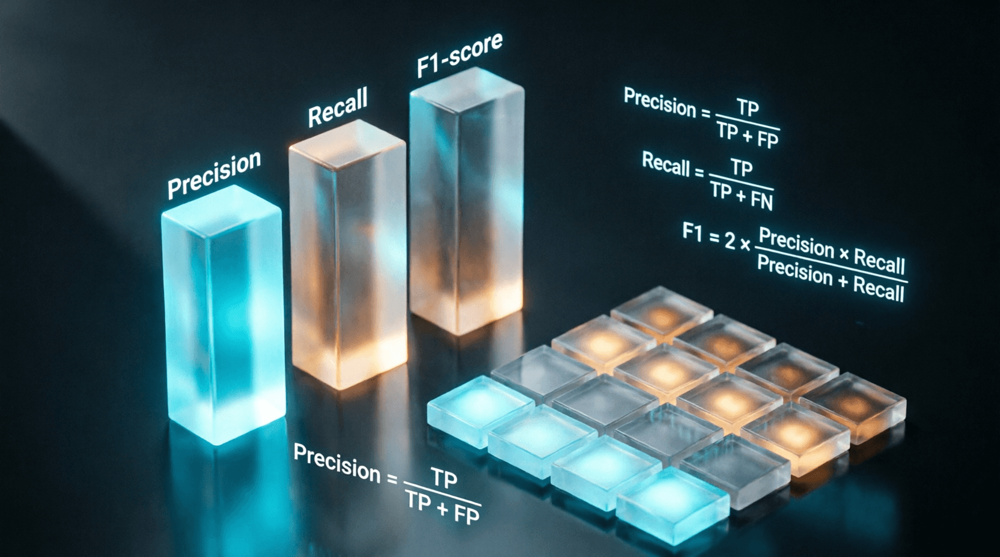

Урок 17: Эффективное дообучение (PEFT / LoRA)
ML-инженер • Блок 4: Масштабирование и инженерия LLM
Полное дообучение (Full Fine-Tuning) больших языковых моделей требует изменения всех миллиардов их параметров. Это экономически нецелесообразно: для обновления весов условной модели на 70B параметров потребуется кластер из дорогостоящих видеокарт только под хранение состояний оптимизатора (Adam). На этом уроке мы разберем концепцию PEFT (Parameter-Efficient Fine-Tuning) и математику алгоритма LoRA, позволяющего адаптировать гигантские нейросети на одной бытовой GPU.
Вместо того чтобы обновлять исходную матрицу весов слоя $W_0$ размера $(d \times k)$, LoRA замораживает её. Рядом со слоем создается параллельный обходной путь из двух матриц: $A$ размера $(d \times r)$ и $B$ размера $(r \times k)$, где ранг $r \ll d, k$ (обычно $r$ выбирают равным 8, 16 или 64).
Где $\alpha$ (alpha) — постоянный коэффициент масштабирования. При инициализации матрица $A$ заполняется случайными гауссовыми числами, а матрица $B$ — строгими нулями. Таким образом, в самом начале обучения $\Delta W = 0$, и поведение модели полностью совпадает с оригиналом, исключая резкие скачки лосса.
Напишем обертку, которая перехватывает сигнал, замораживает базовые веса и создает низкоранговые адаптеры.
import torch
import torch.nn as nn
import math
class LoRALinear(nn.Module):
def __init__(self, base_layer, rank=8, lora_alpha=16):
super().__init__()
self.base_layer = base_layer
self.rank = rank
self.lora_alpha = lora_alpha
self.scaling = lora_alpha / rank
# Полностью замораживаем веса оригинального слоя
self.base_layer.weight.requires_grad = False
if self.base_layer.bias is not None:
self.base_layer.bias.requires_grad = False
# Извлекаем размерности оригинальной матрицы весов
out_features, in_features = self.base_layer.weight.shape
# Создаем низкоранговые матрицы A и B как новые обучаемые параметры
self.lora_A = nn.Parameter(torch.empty(rank, in_features))
self.lora_B = nn.Parameter(torch.empty(out_features, rank))
# Инициализируем параметры по правилам LoRA
self.reset_parameters()
def reset_parameters(self):
# Матрица A инициализируется по Каимингу (He)
nn.init.kaiming_uniform_(self.lora_A, a=math.sqrt(5))
# Матрица B строго заполняется нулями
nn.init.zeros_(self.lora_B)
def forward(self, x):
# Прогон через базовый замороженный слой
base_output = self.base_layer(x)
# Вычисляем параллельный путь адаптера
lora_output = (x @ self.lora_A.t()) @ self.lora_B.t()
lora_output = lora_output * self.scaling
# Итоговый сигнал — сумма базового ответа и низкорангового смещения
return base_output + lora_outputДля еще более глубокой оптимизации инженеры используют QLoRA. Концепция заключается в том, что оригинальные веса модели сжимаются до сверхплотного 4-битного представления данных нового типа — NF4 (NormalFloat4). На этапе прямого прохода эти веса распаковываются «на лету» в формат FP16, перемножаются с матрицей входа, а градиенты вычисляются и сохраняются только для 16-битных весов адаптеров LoRA. Это позволяет дообучать модели уровня Llama-3-7B прямо на одной видеокарте класса RTX 3090 / 4090.
Слияние весов (Zero-Latency Inference): Дополнительное преимущество LoRA — отсутствие задержек на инференсе. По окончании обучения мы можем физически прибавить вычисленное произведение матриц $\frac{\alpha}{r}(B \cdot A)$ к оригинальной матрице $W_0$. В результате мы получаем чистый обновленный линейный слой стандартного формата без необходимости хранить обходные пути в продакшене.
Напишите функцию merge_weights(self) для класса LoRALinear. Функция должна производить вычисление матрицы дельты $\Delta W = (B \cdot A) \cdot \text{scaling}$ с учетом правильного транспонирования, прибавлять полученное значение к тензору весов базового слоя (self.base_layer.weight.data) и переводить состояние модуля так, чтобы метод forward перестал вычислять параллельный обходной путь, выполняя инференс на максимальной скорости. Проверьте равенство выходов до и после слияния.
class LoRALinear(nn.Module):
# ... (__init__, reset_parameters, forward из урока) ...
def merge_weights(self):
"""
Слияние весов LoRA-адаптера с базовым слоем для ускорения инференса.
После вызова этой модели forward должен использовать только base_layer.
"""
# 1. Вычислите ΔW = (B · A) · scaling
# Обратите внимание на транспонирование: lora_B имеет форму [out, r], lora_A [r, in]
# ВАШ КОД ЗДЕСЬ
# 2. Прибавьте ΔW к базовым весам
# ВАШ КОД ЗДЕСЬ: self.base_layer.weight.data += delta_w
# 3. Отключите вычисление LoRA-пути (например, установите флаг или обнулите параметры)
# ВАШ КОД ЗДЕСЬ
# 4. Установите requires_grad=False для всех параметров, так как обучение завершено
# ВАШ КОД ЗДЕСЬ
# Проверка равенства выходов до и после слияния:
# x = torch.randn(2, 4096)
# out_before = lora_layer(x)
# lora_layer.merge_weights()
# out_after = lora_layer(x)
# assert torch.allclose(out_before, out_after, atol=1e-5)class LoRALinear(nn.Module):
# ... (__init__, reset_parameters, forward из урока) ...
def __init__(self, base_layer, rank=8, lora_alpha=16):
super().__init__()
self.base_layer = base_layer
self.rank = rank
self.lora_alpha = lora_alpha
self.scaling = lora_alpha / rank
self.merged = False # Флаг состояния слияния
self.base_layer.weight.requires_grad = False
if self.base_layer.bias is not None:
self.base_layer.bias.requires_grad = False
out_features, in_features = self.base_layer.weight.shape
self.lora_A = nn.Parameter(torch.empty(rank, in_features))
self.lora_B = nn.Parameter(torch.empty(out_features, rank))
self.reset_parameters()
def reset_parameters(self):
nn.init.kaiming_uniform_(self.lora_A, a=math.sqrt(5))
nn.init.zeros_(self.lora_B)
def forward(self, x):
if self.merged:
return self.base_layer(x)
base_output = self.base_layer(x)
lora_output = (x @ self.lora_A.t()) @ self.lora_B.t() * self.scaling
return base_output + lora_output
def merge_weights(self):
if not self.merged:
# ΔW = B @ A, затем масштабируем
# lora_B: [out, r], lora_A: [r, in] → B@A: [out, in]
delta_w = (self.lora_B @ self.lora_A) * self.scaling
# Прибавляем к базовым весам
self.base_layer.weight.data += delta_w
# Обнуляем LoRA-параметры (для экономии памяти)
self.lora_A.zero_()
self.lora_B.zero_()
# Отключаем градиенты
for p in self.parameters():
p.requires_grad = False
self.merged = True
# Проверка:
# x = torch.randn(2, 4096)
# out_before = lora_layer(x).clone()
# lora_layer.merge_weights()
# out_after = lora_layer(x)
# assert torch.allclose(out_before, out_after, atol=1e-5), "Ошибка слияния!"Ранг $r$ определяет «емкость» адаптера. Чем выше ранг, тем больше параметров обучается и тем лучше модель может адаптироваться, но тем выше риск переобучения и потребление памяти.
Приложение бесплатное. Было и останется.
Если проект помог вам или вашим близким — можете поддержать разработку добровольным переводом.
❤️ Спасибо за поддержку!
Перейти в каталог
